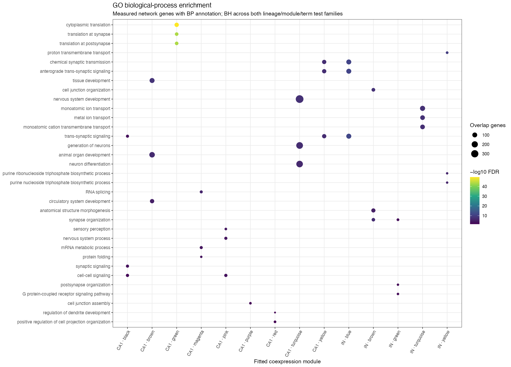

enrichment · GO BP dotplot


Exact source and hashes
{
"source_stem": "enrichment/GO_BP_dotplot",
"label": "enrichment \u00b7 GO BP dotplot",
"component": "hdWGCNA",
"lineage": "other",
"network": "other",
"files": {
"pdf": {
"native_path": "results/enrichment/GO_BP_dotplot.pdf",
"component_relative_path": "enrichment/GO_BP_dotplot.pdf",
"component": "hdWGCNA",
"bytes": 24065,
"sha256": "8fec67a2802f831bd942fd64d3de0f2f0ef41c1ee3198d8020273ae6eba305ac",
"href": "figures/regulatory__95a9e5952f__results__enrichment__GO_BP_dotplot.pdf",
"location": "Pages"
},
"png": {
"native_path": "results/enrichment/GO_BP_dotplot.png",
"component_relative_path": "enrichment/GO_BP_dotplot.png",
"component": "hdWGCNA",
"bytes": 231670,
"sha256": "3e9c3d24d4902b62048561abceb185dd6c60ac8171c20c474e1ebd25c94f3a8a",
"href": "figures/regulatory__213532715f__results__enrichment__GO_BP_dotplot.png",
"location": "Pages"
},
"svg": {
"native_path": "results/enrichment/GO_BP_dotplot.svg",
"component_relative_path": "enrichment/GO_BP_dotplot.svg",
"component": "hdWGCNA",
"bytes": 225561,
"sha256": "e81e5904a31d6a415e7de46f79b2736121d4a50a0e43764f855b119fe98a2021",
"href": "https://github.com/Ali-Mujahid/satb2_snRNA/releases/download/atlas-v3.7.0/SATB2_regulatory_complete_native_results_source.zip",
"location": "complete_native_ZIP"
}
}
}